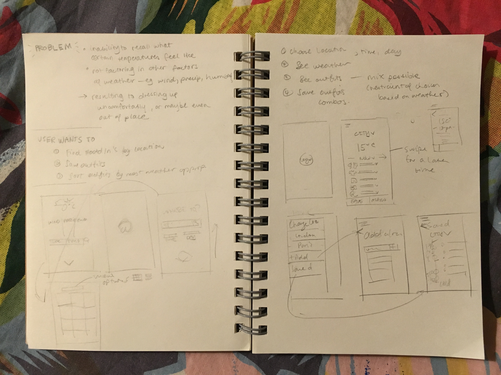
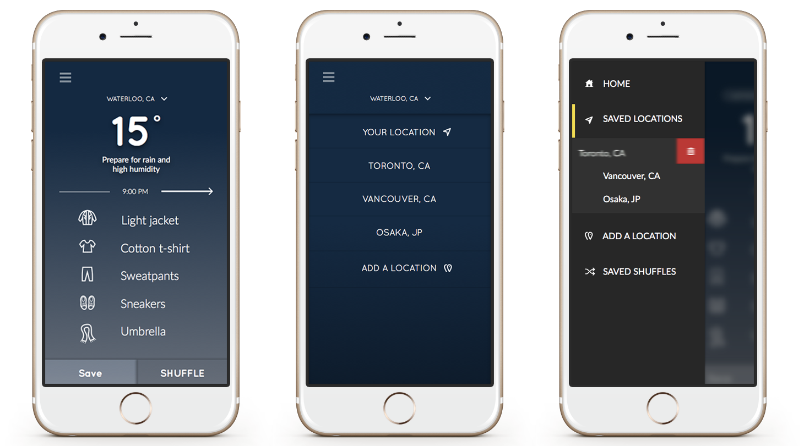
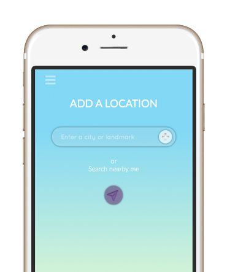
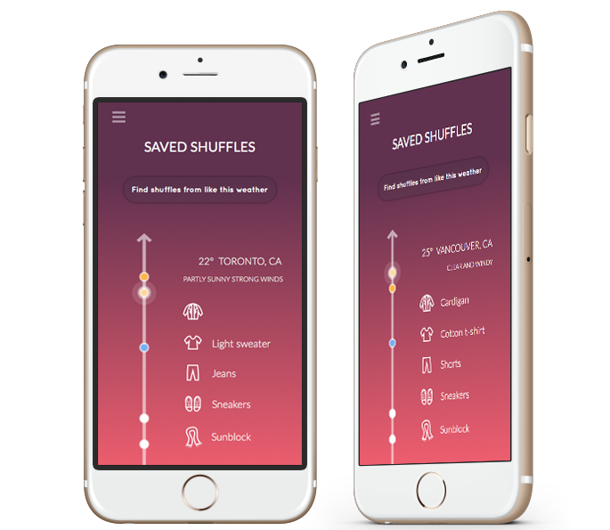

Oil painting
Wearable dress made of paper
WIP of a portrait
Currently I am studying Systems Design Engineering at the University of Waterloo, looking for a design placement for the Spring term.
If you read this far, don't you think it's worth we get a coffee together? I'm kidding, I have a long streak of not having coffee. Feel free to contact me to know.
As a User Experience Analyst at Maple Leaf Foods in Fall 2015, I was in charge of designing promotional and training materials, change communications, and conducting user research for projects by our Modern Workplace team which, aimed to have the entire company adopt a transformation to becoming a digital business coming from a traditional corporate setting.
Change Management Social Media Marketing Photoshop CS6 BrandingMaple Leaf Foods is a company that would fit right in to the old cookie-cutter homes we'd now call a traditional corporation. Working with paper copies of documents and having conversations through countless e-mail trees was not an uncommon
sight. However, recently they have made the decision to move from this mold and to eventually embrace the modern office culture. This had to start with changing the tools and software their users worked with. The Modern Workplace team
was then newly created to plan, handle, and execute these changes to the company.
I worked on Yammer adoption, and the planning and execution of Office 365 Video, OneDrive for Business, and Office 2016—alongside the Modern Workplace team.
Having numerous remote users and various locations in 3 continents, adopting an enterprise social network was seen as a solution to increase employee engagement and to ultimately let go of working in silos.
Before coming in to Maple Leaf, Yammer had been deployed earlier to 3300 employees with an average of 165 members joining each month since 2015. With 40% of our target already on deck, our new goal was to have our users adopt the tool.
Together with our change lead, we gamified our social enterprise and held the 30 Days of Yammer challenge which aimed to jumpstart actvity and increase sign-ups. Challenges included doing certain #YamTips to help users feel comfortable
using the tool, and sparking conversations about thoughts on the business, work, and lifestyle.
Prizes were given every week and were based on the number and required challenges completed. I exported raw data from Yammer and analyzed them on Excel. In the end, we had more than 300 users participate in the #30DaysOfYammer.
As a Yambassador for Maple Leaf Foods, I was also the community manager of our Yammer network providing social media assisitance—welcoming new members, guiding new groups to help them gauge their success and how to sustain activity moving
forward, and presenting Yammer training sessions to various functional groups who wanted to start working out loud in Yammer.
I determined the success metrics through exported raw data of messages and users on a daily basis. We continuously discussed this through weekly scrums and meetings with Microsoft from time to time. If anything, I learned how to tolerate
and analyze the clutter that is called csv files.
Consequently, I was also an admin of multiple groups, ensuring all questions are answered in a timely manner—(proving that ESNs are better than e-mail trees, really).
My favourite group to own was our Yammer 101 group where I posted weekly #YamTips and #FollowFridays. Creating these hashtags or topics were necessary to easily help users track material they might need firsthand when signing up for Yammer.
To pass on this activity to the next admin, I created a design guideline including easy-to-use templates for the graphics I made.
After my 4-month term, we reached our new high of 2265 posts in a month, averaging to 800 posts a month, with 70% of our employees signed up.
If the whole transformation to a digital business was compared to the making of a body, Yammer would be the heart, and this duo would definitely be the brains behind all works.
Coming from Office 2010 and the use of network drives, the implementation of both tools to work together was going to be a huge leap for most users. Considering the age demographic of the company and user research we conducted through
Yammer, not many were actively using or were even aware of similar cloud technologies outside of work.
From designing change communications to moderating Office 365 groups on Yammer, more than 90% of our UAT testers were able to smoothly transition from old technologies to working in the cloud.
The Office 365 duo is scheduled to be released en masse by Q1 of 2016. In advance, I've prepared posters to have company-wide poster campaigns for their new releases.
During my stay in Maple Leaf Foods, this was a question I first asked and tried to delve into deeper through user research, meetings, info sessons, and promoting awareness on Yammer. I answered this question by consulting with functional
groups considering their use cases.
I believe this was the key takeaway from all the shiny new releases of the latest and greatest—because this holds the answer that will drive the Modern Workplace behaviours they have been aiming for, in the future.
This remains the important question that the Modern Workplace team will further define with their newly developed personas and use cases—so that when an answer is provided, the response is, "Crystal."
I've drawn digitally for a couple years but I was always afraid of trying to unravel the mystery of vector art, especially with the daunting pen tool that wasn't intuitive to control. But what happens when I zoom in to all my digital paintings?
PIXELS. Lots of them.
So I decided to start small. "Ah, maybe I'll distort a circle." Great, I could now draw shrivelled beans.
The bean then turned into a head. And then it had ears. And the rest was a whole hack of shapes—and that's really how I got by with vector art, disintegrating my imagined piece into shapes.
This was also my first time trying out Sketch 3, which made vector art much easier to do. (Except for the fact masks didn't work exactly like I expected them to the first time because Photoshop habits die hard or are immortal).
In the end, I created 16 bunny mojis and made ctrl-c ctrl-v my best friends.
Vector art wasn't as bad as I thought, it just required a different thought process when creating a piece of art. Instead of strokes you think of shapes; instead of seamless blending, contrast. Definitely it was fulfilling to be able to
overcome an artistic obstacle from the past.
What I realized shortly after creating one bunny face was that if I zoomed it out just right about the size of an actual moji, all of them would look more or less the same. All that was distinct were the ears.
Well, here's to better luck (or planning) next time.
Being somewhat new to Canada, I’ve always had the trouble of deciding what to wear when I go outside, now that I have three more seasons to worry about—spring, fall, and everyone’s favourite, winter. Although I’ve been in the country for
5 years, I still seem to forget that the Spring doesn’t always mean I can wear short floral dresses; or, that a 20° drop from our 40° summers warrants me to wear a turtleneck to match an Andy Warhol book.
Thus, the concept of
Wearther
was born. My first thoughts on this app was to have it as a
fashion-according-to-weather diary to help with recall, then over time it has grown to be imagined as a convenient way to crowdsource outfit essentials for certain places and weather conditions around the world. And finally, the idea has become Wearther randomizing outfit essentials given any weather and location.
When 'Feels like' is not enough to tell you what it really feels like, or you don't want to be uncomfortable or out of place from either underdressing or overdressing—
Wearther was to be right at your fingers.
I first imagined
Wearther to be a Lookbook or curated Instagram but based on weather, mining data from the user base itself. However, this posed the problem of having another Instagram, or another Lookbook—and one isn't supposed to reinvent to wheel,
or at least make a more complicated one.
Instead I wanted to it to be smart—providing the user outfit suggestions, and then allowing them to save their choices to have the app provide better suggestions later.
 The new idea is that it will provide choices for different components of your outfit: Outerwear, Top, Bottom, Shoes, and Accessories. So depending on the location and time chosen by the user, a group of viable items are available in the
pool of randomized suggestions that the user can see to either save or discard.
So the app must let the user:
I decided that the important components in the home screen of this app were the location, temperature, weather conditions, the 5 outfit items, and the options to allow the user to either save or discard. Gradients are also provided depending
on the weather conditions presented by the chosen location. For redundance, I put the option for the user to change their location right at the home screen, or they can access their other saved locations through the menu.
 To further fulfill task 1, the user is able to swipe left to see weather conditions for a later time as indicated by the arrows beside the time. The time will always default to the current time the user is in, to the nearest half hour—although
outfit suggestions should not be based by hour, but by the average of temperatures and weather conditions predicted for that day.
 To make adding a location easier, it can grab landmarks or even automatically detect where the user is using the location services button.
 The toughest challenge was to display the saved outfits by the user, which should include information such as temperature and weather conditions. I decided to sort the items by temperature (the temperature line can be scrolled up and
down depending on how many saved outfits there are).
This makes more sense as a typical user would first want to know what they wore when it was warm or cold. The place was added in case the user saves from various locations. They can take note that a 10 degree outfit in Japan is not necessarily
the same as a 10 degree outfit they would wear in Vancouver (possibly due to weather conditions, acclimatization, etc.)
Definitely there's room to make a better flow for displaying the saved shuffles, or maybe adding redundant information such as location on top of every screen the user has set it to—or even a better app name overall.
But from a UI perspective, the most important thing this project taught me was not to take away from negative space too much. Besides the fact that in mobile many would fat-finger their phones, emphasizing on negative space is generally
easier to look at, hence more pleasing.
Also, mobile design is a very good practice in becoming sensible in the amount of flat (or non-flat) design elements you have. Flat design has been popular for a couple years now, but through this project I've learned that a mix of both
flat and non-flat is needed especially with mobile, where everything is done with touch but of course most mobile devices lack the haptic feel.